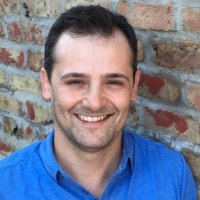

About Us
Founded in 2010, CRUG has become a cornerstone of the Chicago R community. Today, in its second generation of leadership CRUG has grown to about 3,500 members.
Below are current organizers made up of various analytical backgrounds: from mathematicians and statisticians to data analysts and scientists to economists and transportation planners to professors.
Justin Shea Econ Professor/Consultant |
Troy Hernandez IBM Architect  |
Charlotte Frei Transportation Planner |
Adam Ginensky Applied Mathematician |
Irena Kaplan Data Scientist |
Joe Cursio Finance Professor |
Parfait Gasana Econ Data Analyst |
Paul Teetor Applied Statistican |
Gene Leynes City Data Scientist |
Raj V |